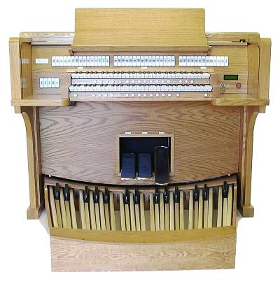

D.L. Simmons & Company Church Organs
Phoenix Organ Model PT 237 Two-Manual Organ
- 148 stops - 37 stops on each of four specifications
- All pipe samples can be identified as to the organ and church from which they were recorded
- High resolution orchestral stops on Specification 4
- 4 Specifications - American Romantic, German Baroque, French and Orchestral/Organ
- General Thumb Pistons, Divisional Thumb Pistons
- Klann Organ Supply Thumb Pistons
- 16 Independent Combination Memory Levels for ea. specification, totaling 64 (up to 99 optional)
- Swell, Great Expression Pedals and Programmable Crescendo Pedal
- MIDI couplers for each Division in the event Hauptwerk is added in future
- Lighted Rocker Tab Stop Controls
- Organ can be easily interfaced with pipes at any time
- Console will be custom stained to match church furnishings
- Solid Oak locking roll top / Only top quality hardwoods and veneers used in console
- AGO pedal board has Select Canadian Maple caps w/ Ash as with pipe organ pedal boards
- 2 Keyboards are tracker touch
- Wood Music Desk (Lighted, Lattice Desk optional) and LED light for pedal board
- Note-by-note and stop-by-stop voicing using 11 different voicing parameters
- LCD Window operated by three thumb pistons - FN, Plus and minus
- Transposer +6, -6 (12 Key)
- Auto Pedal / Reverb Level and Length Adjustments
- Fine Tuning Control / Master Volume Control
- 4 Temperaments - Equal, Werkmeister, Silberman and Velotti
- Minimum of 6 Main audio channels (2.1 available for home use)
- Reverb System is Lexicon MX300 Processor
- Furman Power Sequencer with built-in surge protection and line conditioning
- Many additional options and customizations avaiable

WEBSITE CONTENTS COPYRIGHT© 2015
DL SIMMONS & COMPANY CHURCH ORGANS
DL SIMMONS & COMPANY CHURCH ORGANS